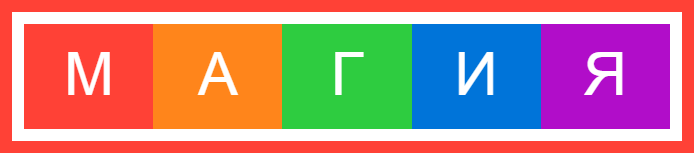

Типографика
Типографика сложна
Для начала позвольте похлопать вас по спине. Вы зашли настолько далеко и читаете о типографике!
Теперь воспользуемся моментом, чтобы реализовать множество вещей в тексте, на которые вы смотрите каждый день. Поэтому, прежде чем обсуждать типографику, взглянем на текст.
Найдите минутку и просто пролистайте некоторые из этих красивых дизайнерских коллекций основанных на типографике:
- Awwwards: Typography in Web Design
- Tutsplus: 10 Examples of Inspirational Typography on the Web
- Web Design Ledger: 21 Beautiful Examples of Typography in Web Design
- Smashing Magazine: A Journey Through Beautiful Typography In Web Design
- Web3Canvas: 20 beautifully designed Typography Website Inspiration 2013
Видение
Как и с цветом, для хорошего дизайна с типографикой потребуется использовать ваши глаза. Действительно увидеть форму каждого символа. Обратить внимание на негативное пространство между символами. У вас больше контроля над такими вещами, чем вы могли бы подумать. И пройдя через несколько разделов я собираюсь показать вам это.
Основные инструменты типографики в CSS
Наш набор основных инструментов состоит из следующего:
Свойства шрифта:
- font-family — serif, monospace
- font-size — 18px, 10px
- font-weight — bold, 100
- font-style — italic
- font-variant — small-caps
Свойства текста:
- text-align — center
- text-decoration — underline, overline, line-through
- text-indent — 50px
- text-shadow — 0 1px 3px red
- text-transform — uppercase
Разное:
- letter-spacing — 5px
- white-space — pre pre
- line-height — .75em
- word-spacing — 100px 100px
Теперь у вас есть общее представление о том, что возможно, давайте взглянем на несколько комбинаций этих свойств.
Примеры
Пример 1: Тонкие буквы, прописные, с интервалом
Тонкий цветной текст на тёмном фоне, как правило, воспринимается так, будто он более насыщенный. В этом примере белый на багровом, мы пошли на font-weight: 300.
Использование всех букв в верхнем регистре может оказать сильное воздействие, так что применяйте это редко. Одна вещь может произойти со словами в верхнем регистре — БУКВЫ БУДУТ ВОСПРИНИМАТЬСЯ ЗАЖАТЫМИ. Это потому, что кернинг по умолчанию и letter-spacing предназначены, в основном, для слов в нижнем регистре. Чтобы компенсировать это и добавить чуть больше серьёзности, мы щедро включили letter-spacing: .4em.
Свойства letter-spacing и text-align плохо сочетаются вместе, потому что пустой промежуток добавляется справа к каждой букве. Чтобы компенсировать это, когда указанные свойства используются совместно, мы добавим padding-left со значением, соответствующим letter-spacing (в нашем случае .4em).
.typography-example-1 {
background-image: linear-gradient(135deg, #723362, #9d223c);
background-color: #9d223c;
color: #fff;
padding: 1em 0;
font-weight: 300;
font-size: 1.8em;
text-transform: uppercase;
text-align: center;
letter-spacing: .4em;
padding-left: .4em
}Пример 2: Контрастная насыщенность и стили
В следующем примере мы покажем, как две строки текста взаимодействуют друг с другом.
Первая строка получает похожую трактовку из примера 1, но с насыщенностью 700. Для контраста второй строке даётся насыщенность 300, курсив и светлый цвет #888.
.typography-example-2 {
background: #fff;
color: #000;
border: .5em solid;
font-size: 1.5em;
padding: 1em 0;
text-align: center
}
.typography-example-2 .title {
font-weight: 700;
text-transform: uppercase;
letter-spacing: .4em;
padding-left: .4em
}
.typography-example-2 .author {
color: #888;
font-size: .7em;
font-weight: 300;
font-style: italic;
letter-spacing: .12em;
padding-left: .12em
}Пример 3. Настройка отдельных букв
Иногда хочется немного развлечься с текстом. Для этого есть Lettering.js — классный небольшой инструмент. Но если вы готовы самостоятельно обернуть каждую букву в <span>, вы сможете делать подобные вещи без применения JavaScript!
.typography-example-3 {
border: .2em solid #ff4136;
font-size: 3em;
text-align: center;
padding: .2em;
color: #fff
}
.typography-example-3 span {
display: inline-block;
width: 20%;
padding: .8125rem
}
.typography-example-3 span:nth-child(1) { background: #ff4136 }
.typography-example-3 span:nth-child(2) { background: #ff851b }
.typography-example-3 span:nth-child(3) { background: #2ecc40 }
.typography-example-3 span:nth-child(4) { background: #0074d9 }
.typography-example-3 span:nth-child(5) { background: #b10dc9 }
Типографика повсюду
Надеемся, что эти несколько примеров дали вам представление о том, что возможно с различными свойствами CSS. Типографика — это такая же важная часть дизайна, поэтому множество размышлений и понятий связанных с типографикой вложено в других разделах. Мы будем продолжать исследовать типографику по мере прохождения.
Практическая типографика
Для получения большего удовольствия от типографики посмотрите удивительные ресурсы приведённые ниже. В частности, взгляните на Butterick’s Practical Typography. Это обязательно к прочтению всем, кто интересуется типографикой.
Дальнейшее чтение
- Butterick’s Practical Typography
- CSS Typography Cheat Sheet
- Type Scale
- Codedrops: Make a Statement with Type

Все материалы сайта доступны по лицензии Creative Commons «Attribution-NonCommercial» («Атрибуция — Некоммерческое использование») 4.0 Всемирная, если не указано иное.